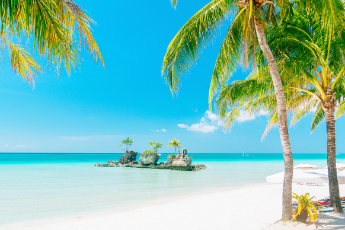
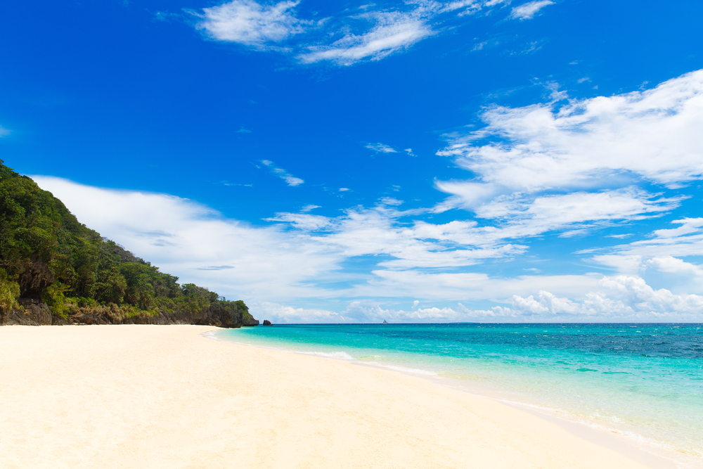
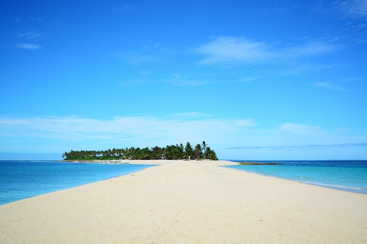
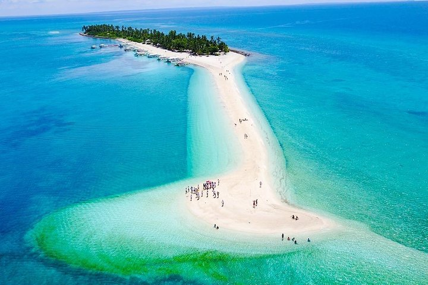
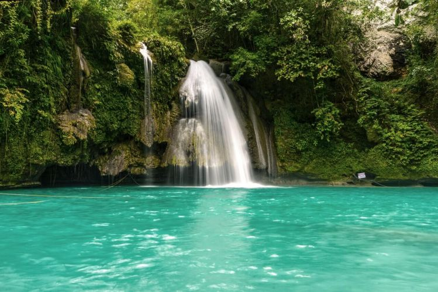
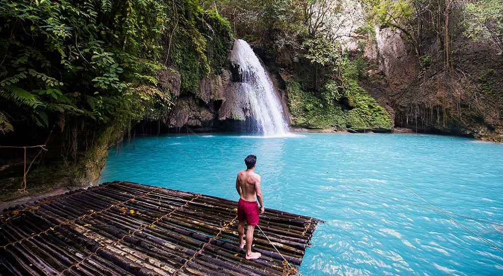
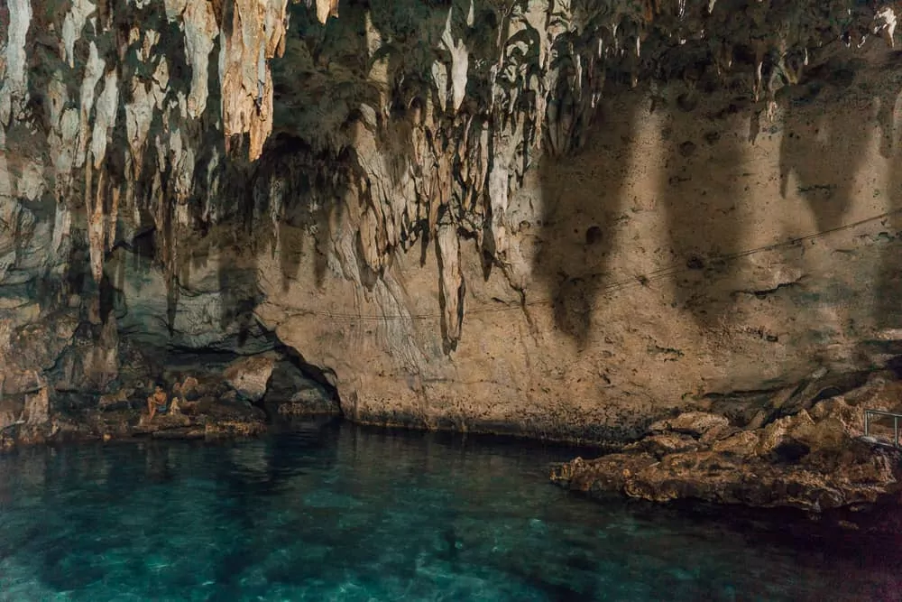
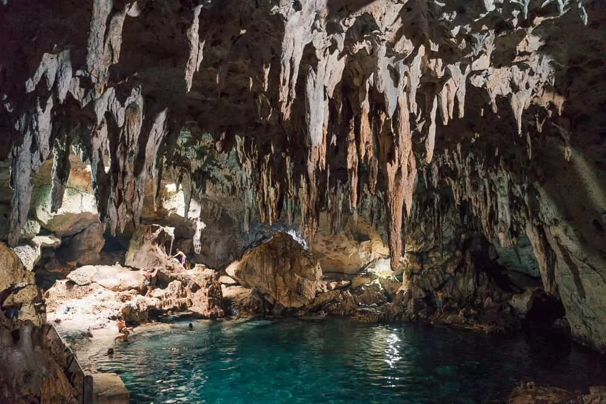

Boracay, Aklan
More than the turquoise waters, stunning scenery, and colorful marine life – going to White Beach in Boracay is the ultimate experience. This is what makes Boracay stand out from the rest. It may have gone through a downtime, but it has gone back up. It has shown the world that change is good.
Boracay's White Beach has been recognized as one of the most beautiful beaches in the world through the years. There’s something about its natural beauty – its crystal blue water, its pure white sand, and its magical sunsets.


Kalanggaman Island, Leyte
Witness the untainted beauty of Leyte’s virgin paradise, Kalanggaman Island. This private day trip is perfect for nature lovers who are looking for a unique beach destination. Derived from the word “langgam” which means bird in Cebuano, Kalanggaman Island got its name because of the island’s peculiar shape. From above, the island looks like a bird in flight. This stunning island is now one of the top beach destinations in the Philippines because of its turquoise blue waters and long sandbars from both sides of the island.
The Island is said to be a smaller version of Boracay. What sets it apart from other beaches are its charming sandbars and the lack of crowds. The island is an ideal place to lounge around or take a dip in the water. You can also rent kayaks and paddleboards.


Kawasan Falls, Cebu
Kawasan Falls is a three-stage cascade of clear turquoise water from the mountain springs of Mantalongon mountain range and one of the top Cebu tourist spots. Aside from its natural beauty, Kawasan Falls has also become famous because one of the most popular activities in Cebu is done there— Canyoneering.
Kawasan Falls is famous for its turquoise blue waters and is undeniably one of the best tourist spots in the region. If you’re an adventure junkie, take a canyoneering tour from Algeria on your way to Kawasan Falls.


Hinagdanan Cave, Bohol
The Hinagdanan Cave, meaning “Laddered” in Cebuano, is one of the many wondrous caves in the island province of Bohol.
The cave was accidentally discovered by a farmer; while clearing his land he found 2 holes, curious, he dropped a stone and heard a splash. He built a ladder “hagdan” and was able to access the cave and find its hidden beauty, thus the origin of the name Hinagdanan.